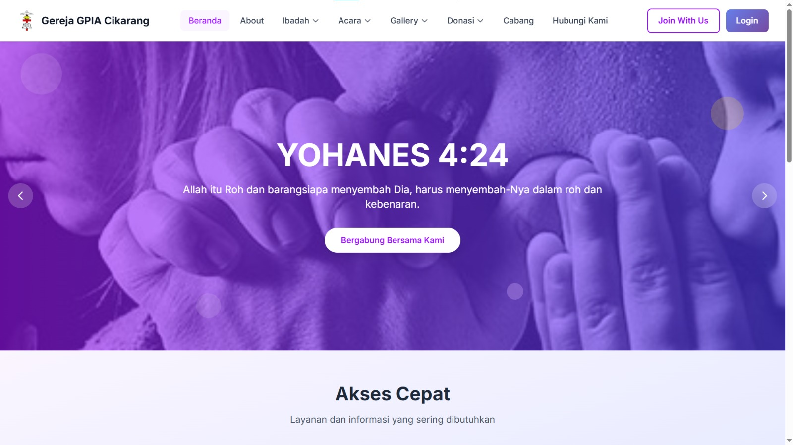
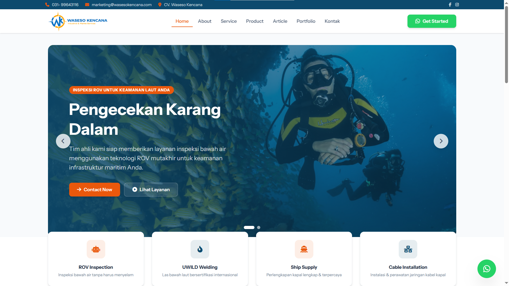
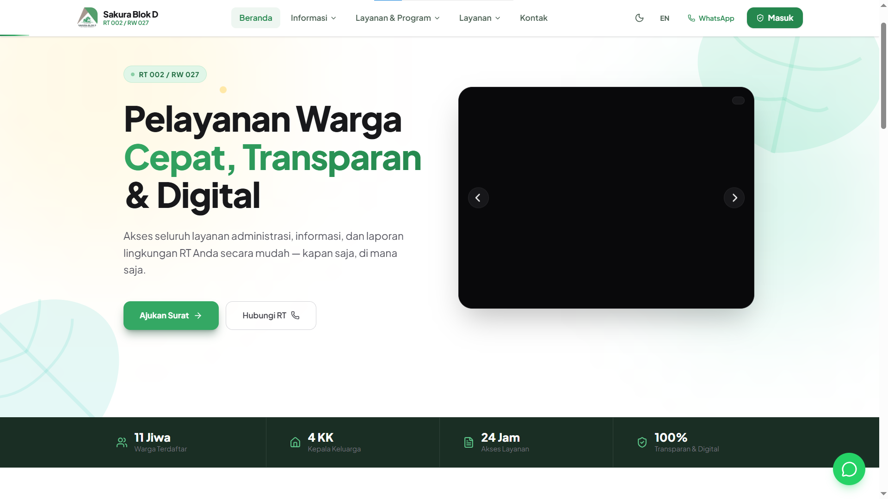
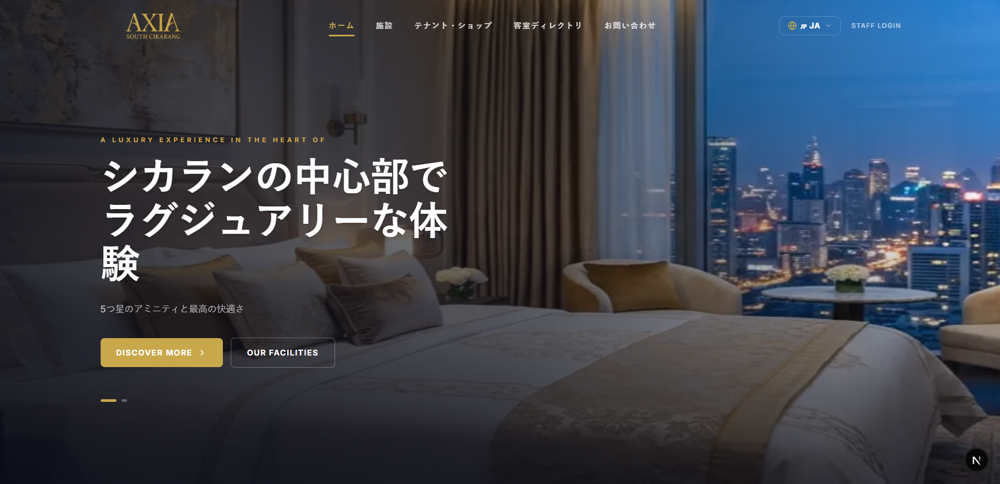

> |
Mahasiswa Informatika yang passionate di bidang pengembangan web full-stack dan jaringan komputer. Berpengalaman dalam membangun aplikasi modern dengan teknologi terkini, serta memiliki keahlian di bidang instalasi jaringan dan infrastruktur IT.
Tech Stack
Keahlian Jaringan
Institut Teknologi Insan Cendekia Mandiri — Sidoarjo, Jawa Timur
Fokus pada pengembangan perangkat lunak, rekayasa sistem, dan jaringan komputer. Lulus dengan IPK 3.87/4.00.
SMK Negeri 7 Technopreneur Merdeka Kaur
Mempelajari pengolahan hasil pertanian berbasis teknologi dan kewirausahaan digital.
SMP Negeri 22 Satu Atap Kaur
Menempuh pendidikan dasar menengah dan mulai mengenal dunia teknologi informasi.
Sarirogo, Sidoarjo, Jawa Timur
Institut Teknologi Insan Cendekia Mandiri
Yayasan Yatim Mandiri
Berpartisipasi aktif sebagai relawan dalam kegiatan sosial dan pemberdayaan anak yatim. Membantu koordinasi kegiatan dan dokumentasi program yayasan.
PT Bitmatic Inovasi Teknologi
Melakukan instalasi dan konfigurasi jaringan, server, serta CCTV di lapangan. Menangani troubleshooting infrastruktur IT dan memastikan sistem berjalan optimal.

Website sistem informasi gereja lengkap dengan manajemen jemaat, kegiatan, dan administrasi berbasis Laravel Filament.

Website company profile dengan CMS custom untuk CV Waseso Kencana, memudahkan pengelolaan konten secara mandiri.

Sistem Manajemen Informasi RT untuk Perumahan Sakura — mengelola data warga, pengumuman, iuran, dan administrasi lingkungan secara digital.

Website CMS multi bahasa untuk Hotel Axia South Cikarang — mendukung pengelolaan konten dalam berbagai bahasa untuk menjangkau tamu internasional.